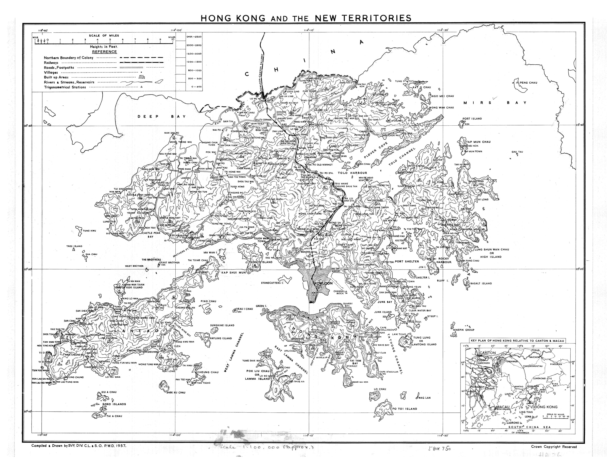

A. 政府關注焦點轉向：由「治安管治」轉向「民生基建」？
分析 1975–1980 年間各政策範疇在 MOOD 報告中的佔比變化（Attention Share %），滑鼠懸停可檢視各年度精確百分比。
關鍵詞雲：報告講得最多嘅詞
按出現份數計（170 份報告），字愈大即係愈多報告有呢個關鍵詞撳任何一個詞，會跳去檔案庫搜尋提到呢個詞嘅報告。
B. 市民點睇？邊啲議題最令人憤怒與焦慮？
兩幅互動圖：左邊睇邊個階層對邊啲議題有咩情緒；右邊睇唔同年份，各階層嘅情緒佔幾多。
C. 邊個階層講邊啲議題？（階層—議題二分網絡圖）
左邊係受訪階層，右邊係政策議題。連線愈粗，即係嗰個階層提到嗰個議題嘅次數愈多。撳入任何一點，睇下唔同階層係咪各有各關心嘅議題。
連繫與歷史背景
成個圖一覽撳左邊任何一個階層（例如 Grassroots 草根），或者右邊任何一個議題，呢度就會列出佢同對面邊啲有連繫、連繫有幾強（即係一齊出現過幾多次），再加埋歷史背景。
D. 歷史檔案夾：地區空間分佈與 MOOD Report 檢索資料庫
下面個檔案夾有兩層：第一層係原版 Kepler 地圖（3D 熱點加時間線）；第二層係最終版報告資料庫（229 筆），可以搜尋同篩選。
原版 Kepler.gl 地圖（熱點 + 時間線）
呢幅就係你哋嗰幅 Kepler 地圖：六角格愈高愈深色，即係嗰區報告愈多；下面條時間線可以拖去唔同年份。全港泛指嘅 139 份報告以成個香港淡色顯示，28 份有具體地區嘅報告逐份落點。下面另有 1957 年歷史地圖一幅，供對照當時嘅香港。
提示：如果地圖出唔到，請確認 mood_kepler_map_v20.html 同呢個網頁放喺同一個資料夾入面。地圖本身有 3D 傾斜視角，可以用滑鼠拖動、縮放。

大事年表：背景同報告點樣互相呼應
呢條年表分兩層：背景大事係 1975–1980 年間發生嘅事（有啲報告冇直接寫出嚟）；MOOD 報告係我哋數據入面有記錄嘅。撳任何一份報告可以直接睇佢嘅摘要。
南越政府倒台，大量越南難民開始逃離。香港隨即成為第一收容港，呢個問題之後四年一直係 MOOD 報告嘅焦點。
三份系列報告（對中國、對台灣、對英國嘅態度），記錄香港人對中國政府嘅懷疑慢慢冷卻，左派右派分界模糊，英國威望下跌。係用民政署職員印象評估，唔係問卷調查。
中國總理周恩來逝世。文革尾聲嘅權力交接開始，香港人對中國前途嘅不確定感升溫。
旺角發生槍擊案，公眾關注治安同警隊用槍。同份報告亦有 MTR 公布嘅反應。
1976 年 8 月秀茂坪山泥傾瀉，呢份報告跟進傳媒報道對公眾嘅影響；1977 年 2 月再有跟進報告。
中共領袖毛澤東逝世。呢幾個月嘅 MOOD 報告冇直接提呢件事——大事唔一定會寫出嚟。
四人幫被捕，文化大革命結束。呢幾個月嘅 MOOD 報告同樣冇直接提，講嘅係租金、公共援助呢啲本地議題。
英女皇銀禧訪港慶典，公眾參與踴躍。
麥理浩總督喺立法局發表施政報告，2,443 名受訪者大多數反應正面，但關注食水限制、強迫教育同居屋細節。
政府就綠皮書進行公眾諮詢，呢兩份報告評估諮詢過程同埋事後檢討。
經歷 1976 年嘅劇變之後，香港人對中國大陸嘅態度轉為越來越正面，中港關係改善、經濟同外交合作擴大。
中共十一屆三中全會，鄧小平推動改革開放。中國由封閉轉向開放，係 1978 年態度轉變嘅大背景。
美國同中國正式建立外交關係。同月嘅 MOOD 報告記錄公眾反應，仲有 Huey Fong 號難民船事件。
1979 年係越南船民問題最嚴重嘅一年：3 月報告講難民問題，6 月啟德難民營騷亂，7 月日內瓦開會討論難民問題。
地鐵公布車費，公眾反應強烈；5 月再有交通白皮書同埋車費公布嘅初步反應。
政府發表地區行政綠皮書，公眾對地區行政改革嘅反應。呢份係數據入面最長嘅報告之一（27 頁）。
註：背景大事嘅日期係歷史日期；MOOD 報告嘅日期係報告日期。1976 年 9–12 月（毛澤東逝世、四人幫倒台）嗰幾個月嘅報告，講嘅係租金、公共援助等本地議題，冇直接提呢兩件事——正正說明大事唔一定會寫出嚟。
資料係點嚟嘅，點樣整理
呢個網站嘅數字全部嚟自同一份整理好嘅數據，唔係隨便估。以下係最重要嘅幾點；完整方法、錯誤率同埋決策紀錄，請睇 methods report。
資料來源
MOOD 報告（Movement of Opinion Direction），1975–1980 年，來自香港政府檔案處三個檔案系列：HKRS394-26、HKRS925-1、HKRS471-3。組員去檔案館人手掃描原件做 PDF，再用 steno 做 OCR 變成文字檔；CSV 嘅資料係根據 OCR 文字整理。最後整理出 170 份報告、229 個議題，其中 216 筆有日期，13 筆無日期。整理過程主要用 OCR 文字，個別有疑問嘅地方（例如 78 行印出標題）有對返 PDF 原件核實。
去重
搵到 78 組重複報告，每組留最長嗰份（以 OCR 段落頁數計，打和就留總編號最小嗰份），剔走 141 筆重複。去重前有 311 行議題記錄。
分類
主題分類用 v2.2：9 類（政治、經濟、法律、交通、房屋、教育、公共衛生、社區環境、勞工），詞典加人手覆核。情緒係報告層面整體判斷，分支持、懷疑、憤怒、焦慮、冷淡五種，冇「混合」呢個選項。
限制
127 行低置信度分類未逐行覆核；8 份報告來源待定。「政府回應」欄係後加嘅，空白唔等於政府冇回應。檔案標題係編者擬定，唔係印出原標題；原文首行標題先係印出原題。
工作流程
數據清理過程
月同日寫反咗
有啲報告嘅月同日寫反咗，已經逐一核對更正。日期錯會直接影響趨勢圖嘅結果，所以呢一步好重要。
同一份報告出現幾次，留最詳細嗰份
唔同檔案系列入面有同一份報告。如果兩份完全一樣，就刪走其中一份；如果其中一份詳細啲、除咗重覆嘅議題之外仲有其他議題，就保留詳細嗰份，刪走短嗰份。
真正來源係 OCR 文字檔，唔係 PDF
數據實際係嚟自 OCR 文字檔，但係欄目設計嗰陣將來源寫成「PDF 原始檔名」。分類器同 AI 摘要都係跟呢個邏輯配對：搵到同名 PDF 就用 PDF 嘅名同資料夾，搵唔到就將文字檔名加 .pdf 當做 PDF 名，所以有啲來源資料對唔上，例如起始頁數唔啱。而家已經講明真正來源係 OCR 文字檔。
中英文分類唔一致，字典要重寫
有唔少報告嘅中文分類同英文分類唔同。原因係中文分類係按權重計：邊類關鍵詞出現最多就歸入邊類，但係用詞數量唔一定直接反映議題。解決方法係重寫個字典：加專有詞、刪通用詞。
編號係固定識別編號，唔係行號
「總編號」同「議題編號」係固定嘅識別編號，唔會由 1 開始，亦唔會連續。原始數據有 334 份報告，剔除 23 份非報告之後剩 311 份；去重之後剩 170 份。例如 1 號、32 號、153 號同 221 號係同一份報告，保留最長嘅 221 號，所以最終數據由 2 號開始。311 份報告拆出 413 個議題（T001–T413），合併之後剩 410 個；T001 屬於 1 號報告，隨住嗰份報告去重而剔除，所以最終數據由 T002 開始。去重之後，議題由 410 個減到 229 個。保留原編號係為咗令同一份報告或者議題可以喺唔同檔案之間互相對照；重新編號反而會令引用失效。
兩種分類方法，唔係中英對照
「Category」同「主題分類 v2.2」唔係同一分類嘅中英對照，而係兩種唔同方法得出嘅分類。英文欄係原始分類器按報告主題判斷（7 類）；中文 v2.2 欄係之後用關鍵字詞典重新分類再加人手覆核（9 類，房屋／社區環境、交通／勞工各自獨立）。兩者方法同粗細唔同，約三分之一報告嘅分類並不一致——呢個正正係分類方法本身唔穩定嘅證據，應該保留嚟檢驗，唔好用其中一種覆蓋另一種。同時保留兩欄，分析嗰陣可以互相對照，寫中文同英文報告嗰陣亦可以各自引用。